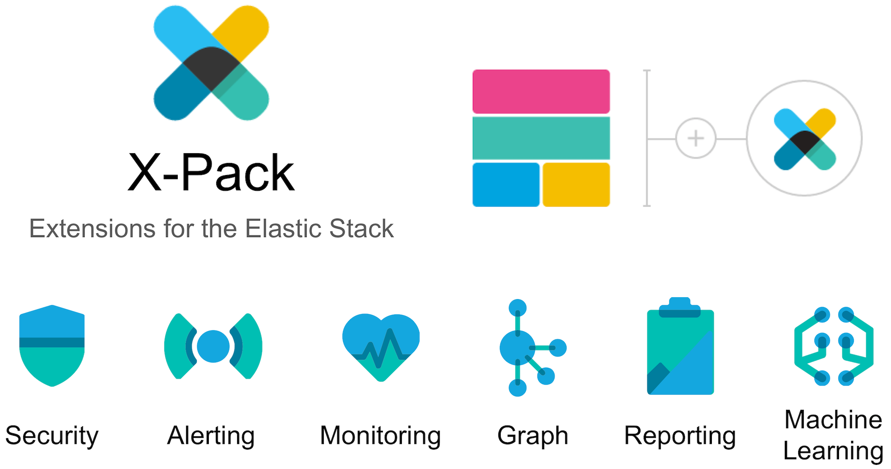
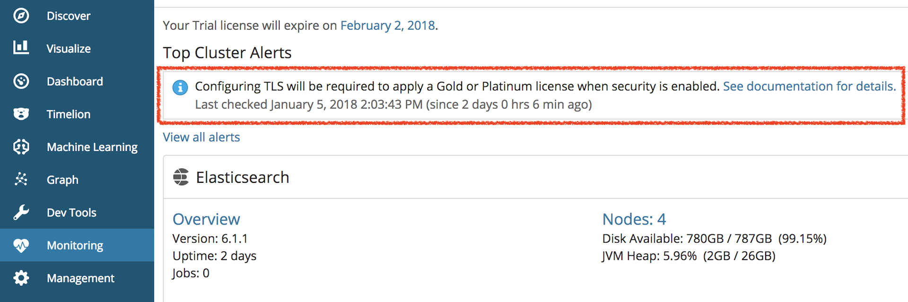
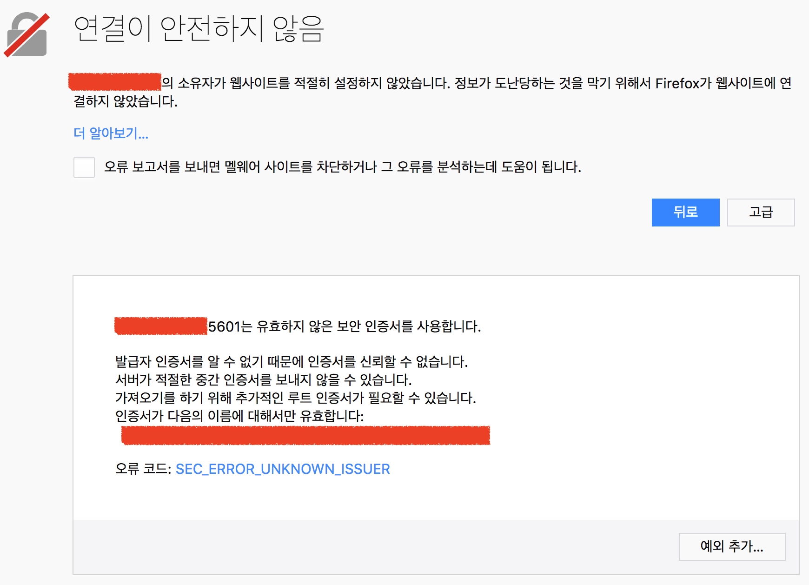
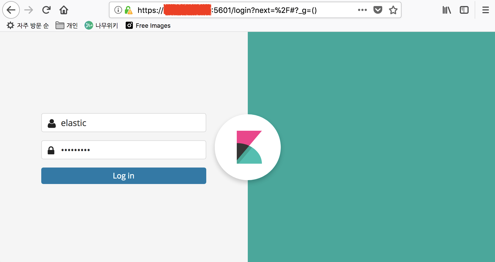

이번 포스트에서는 X-Pack Security를 이용한 보안 설정을 하도록 하겠습니다. 이전 또는 이후 내용들은 아래 포스트에서 확인하세요.
1. 서버 생성 및 Elasticsearch RPM 설치
2. 메모리, 네트워크 설정 및 플러그인 설치
3. 클러스터 구성 및 마스터, 데이터 노드 설정
4. Kibana 설치 및 X-Pack Monitoring 확인
5. NFS 구성 및 elasticsearch 추가 설정
6. X-Pack Security를 이용한 SSL 및 TLS 설정
7. X-Pack License 적용 및 사용자 생성
8. Logstash 설치 및 Elasticsearch 기본 템플릿 설정
참고로 X-Pack은 Elastic에서 배포하는 공식 상용 플러그인이며 다음과 같은 모듈들을 가지고 있습니다.

- Security: 사용자/권한 기반의 인증 및 통신 암호화 기능을 제공합니다.
- Alerting: 쿼리 기반의 자동 알림 기능을 제공합니다.
- Monitoring: ES 클러스터의 상태 모니터링 기능을 제공합니다.
- Graph: 관계도 분석 기능을 제공합니다.
- Reporting: Kibana 대시보드를 PDF로 내려받거나 데이터를 CSV 파일로 저장합니다.
- Machine Learning: 시계열 데이터 기반의 실시간 이상징후 탐지 기능을 제공합니다.
다른 모듈들에 대해서는 각 제목에 링크된 공식 홈페이지 내용을 참고하시기 바랍니다.
오늘은 작업 할 내용들은 다음과 같습니다.
- Elasticsearch 노드들 간의 통신에 TLS를 설정 하고, Elasticsearch와 다른 클라이언트 프로그램들 간에는 그냥 http로 두겠습니다.
- Kibana 에 SSL을 적용해서 사용자가 Kibana에 접속할 때 https://host:5601 로 접속할 수 있도록 하겠습니다.
- Audit(감사) 로그를 수집하도록 하겠습니다.

Elasticsearch 노드들 간의 TLS 설정
Elasticsearch 6.0 부터는 X-Pack 설치 이후에는 기본적으로 노드들 간의 통신에 TLS를 설정 해 주어야 합니다. 그렇지 않으면 계속 해서 경고가 표시되고 심지어 기술지원 라이센스의 등록도 되지 않습니다.

인증서 파일 생성
X-Pack은 이미 설치가 되어 있으니 이제 인증서 파일을 만들어 줍니다. 공인 인증기관으로부터 구매한 인증서가 있다면 사용하셔도 되고, X-Pack 에는 Elastic 에서 발행하는 사설 인증서를 생성하는 도구인 certgen 을 포함하고 있습니다. certgen에 대한 내용은 아래 링크를 참고하세요.
https://www.elastic.co/guide/en/elasticsearch/reference/6.1/certgen.html
인증서를 생성하기 위해 설치 디렉토리로 가서 다음과 같은 명령을 실행합니다.
[ ]$ cd /usr/share/elasticsearch/ |
몇가지 질문이 나옵니다.
인증서 파일 세트를 담은 압축 파일은 certificate-bundle.zip 그대로 두겠습니다. 비워두고 그냥 엔터를 칩니다.Please enter the desired output file [certificate-bundle.zip]:
인증서 인스턴스 이름은 임의의 이름을 입력하면 됩니다. 여기서는 es-demo 라고 하겠습니다. es-demo를 입력하고 엔터를 칩니다.Enter instance name: es-demo
디렉토리, 파일 이름은 인증서 이름이랑 동일하게 하면 됩니다. 그냥 엔터를 칩니다.Enter name for directories and files [es-demo]:
인증서에 적용할 IP 주소들을 적습니다. 저희 노드를 설치한 서버들의 IP 주소들을 콤마로 구분해서 모두 적어줍니다.Enter IP Addresses for instance (comma-separated if more than one) []: 192.168.0.10,192.168.0.11,192.168.0.12,192.168.0.13
DNS는 없으니까 비워두겠습니다.Enter DNS names for instance (comma-separated if more than one) []:
추가 인증서는 만들지 않으니 n을 입력하고 엔터를 칩니다.Would you like to specify another instance? Press 'y' to continue entering instance information: n
그럼 이제 /usr/share/elasticsearch/certificate-bundle.zip 경로에 인증서가 담긴 압축 파일이 생성됩니다.Certificates written to /usr/share/elasticsearch/certificate-bundle.zip
... 후략 ...
이제 이 압축 파일을 /usr/share/elasticsearch 아래에 cert 라는 디렉토리를 만들고 이곳으로 옮겨 압축을 풀도록 하겠습니다.[ ]$ sudo mkdir cert
[ ]$ sudo mv certificate-bundle.zip ./cert
[ ]$ cd cert/
[ ]$ sudo unzip certificate-bundle.zip
Archive: certificate-bundle.zip
creating: ca/
inflating: ca/ca.crt
inflating: ca/ca.key
creating: es-demo/
inflating: es-demo/es-demo.crt
inflating: es-demo/es-demo.key
압축을 풀면 ca 디렉토리 아래에 ca.crt, ca.key 파일, 그리고 es-demo 디렉토리 아래에 es-demo.crt, es-demo.key 파일, 총 4개의 파일이 생성됩니다.
Elasticsearch 설정
이제 인증서가 만들어 졌으니 elasticsearch 설정을 합니다. 설정은 아래 페이지를 참고하여 진행합니다.
https://www.elastic.co/guide/en/x-pack/current/ssl-tls.html#enable-ssl
코디네이션 노드의 elasticsearcy.yml 파일을 열고sudo vim /etc/elasticsearch/elasticsearch.yml
아래와 같이 입력 해 줍니다.xpack.ssl.key: /usr/share/elasticsearch/cert/es-demo/es-demo.key
xpack.ssl.certificate: /usr/share/elasticsearch/cert/es-demo/es-demo.crt
xpack.ssl.certificate_authorities: [ "/usr/share/elasticsearch/cert/ca/ca.crt" ]
xpack.security.transport.ssl.enabled: true
xpack.security.http.ssl.enabled: true
xpack.security.http.ssl.enabled: true 이 http SSL 설정 부분은 나중에는 다시 제거하겠으나 테스트를 위해 일단 지금은 설정을 하겠습니다.
데이터 노드들도 위와 동일하게 하는데 데이터 노드들은 http 기능을 잠궈 놓았기 때문에 xpack.security.http.ssl.enabled: true 이 부분은 입력하지 않도록 합니다.
이제 설정이 끝났으면 모든 노드들을 재시작 해 보겠습니다.sudo service elasticsearch restart
그리고 로그를 확인 해 보면… 오류가 납니다.Caused by: java.security.AccessControlException: access denied ("java.io.FilePermission" "/usr/share/elasticsearch/cert/ca/ca.crt" "read")
지금 설치된 서버의 Java에 java.io.FilePermission 권한이 없어서 그렇습니다. 조금 귀찮은 작업을 좀 해야 하는데요, java.policy 파일 내용을 수정해야 합니다. 아래와 같이 java.policy 파일을 열고 (시스템 마다 설치 경로는 다를 수 있습니다.)sudo vim /usr/lib/jvm/jre-1.8.0-openjdk.x86_64/lib/security/java.policy
grant 내부의 맨 아래 부분에 다음과 같이 추가 해 줍니다.grant {
... 중략 ...
permission java.io.FilePermission "<<ALL FILES>>", "read";
};
이제 다시 한번 노드들을 재시작 하고 나면 정상적으로 실행 되는 것을 확인할 수 있습니다.sudo service elasticsearch restart
SSL 확인
코디네이트 노드가 있는 서버 콘솔에서 curl 로 접속을 해 보면[ ]$ curl http://172.31.27.193:9200
curl: (52) Empty reply from server
서버가 없다고 나옵니다. SSL을 적용 했기 때문에 http가 아닌 https 로 접속해야 합니다. https로 접속을 해 보면[ ]$ curl https://172.31.27.193:9200
curl: (60) Peer's Certificate issuer is not recognized.
...
또 다시 아까와는 다른 오류 메시지가 나오는데, 제가 사용한 인증서가 사설 인증서라서 나오는 경고입니다. -k 옵션을 추가 해 주면 경고를 무시합니다.[ ]$ curl https://172.31.27.193:9200 -k
{"error":{"root_cause":[{"type":"security_exception","reason":"missing authentication token for REST request [/]","header":{"WWW-Authenticate":"Basic realm=\"security\" charset=\"UTF-8\""}}],"type":"security_exception","reason":"missing authentication token for REST request [/]","header":{"WWW-Authenticate":"Basic realm=\"security\" charset=\"UTF-8\""}},"status":401}
이제 조금 익숙한 화면이 나옵니다. -u 옵션으로 사용자 이름, 암호까지 넣어주면 이제 확인이 가능합니다.[ ]$ curl https://172.31.27.193:9200 -k -u elastic
Enter host password for user 'elastic':
{
"name" : "es-demo-service",
"cluster_name" : "es-demo",
"cluster_uuid" : "VLakkqSHynSuf0g",
"version" : {
"number" : "6.1.1",
"build_hash" : "bd92e7f",
"build_date" : "2017-12-17T20:23:25.338Z",
"build_snapshot" : false,
"lucene_version" : "7.1.0",
"minimum_wire_compatibility_version" : "5.6.0",
"minimum_index_compatibility_version" : "5.0.0"
},
"tagline" : "You Know, for Search"
}
http SSL을 사용하려면 kibana 등에서도 elasticsearch.url: 값을 https://... 로 바꾸는 등 여러가지 설정을 해야 합니다. 그리고 지금 사용중인 인증서가 공인 기관의 인증서가 아닌 사설 인증서이기 때문에 elasticsearch에 REST API로 접속하는 프로그램들은 모두 인증서 경고에 대한 예외 처리를 히야 해서 손이 많이 가고, elasticsearch 코디네이트 노드와의 통신은 모두 같은 로컬 서버에서 이루어지기 때문에, http SSL 옵션은 다시 꺼 놓도록 하겠습니다.
코디네이션 노드의 elasticsearcy.yml 파일의 xpack.security.http.ssl.enabled: true 부분은 삭제 또는 주석처리 하도록 합니다.
sudo vim /etc/elasticsearch/elasticsearch.yml |
xpack.security.transport.ssl.enabled: true |
참고로, Kibana 의 Monitoring 화면을 확인 해 보면 아까 나타났었던 TLS 경고 문구가 사라져 있습니다.
Kibana SSL 설정
이제 Kibana에도 SSL을 설정 해 보도록 하겠습니다. 먼저 kibana.yml 파일을 열어서sudo vim /etc/kibana/kibana.yml
아래 내용을 추가 해 줍니다. 중간에 잘 찾아 보면 주석 처리 된 부분이 있는데 이 부분을 풀고 수정 해도 됩니다.server.ssl.enabled: true
server.ssl.certificate: /usr/share/elasticsearch/cert/es-demo/es-demo.crt
server.ssl.key: /usr/share/elasticsearch/cert/es-demo/es-demo.key
이제 Kibana 를 재시작하고 나면sudo service kibana restart
Kibana도 https://서버주소:5601 로 접속할 수 있습니다. 그런데 접속 해 보면 사설인증서를 알리는 경고창이 뜹니다.

고급 > 예외 추가를 눌러서 (브라우저 마다 다를 수 있습니다. 저는 FireFox Quantum을 씁니다.) 인증서를 허가 하면 이제 Kibana 화면이 나타납니다.

Audit(감사) 로그 설정
X-Pack Security 에는 접속 및 사용 이력을 기록하는 감사 로그를 설정할 수 있습니다. 감사 로그 설정은 아래 문서를 참고해서 진행합니다.
https://www.elastic.co/guide/en/x-pack/current/auditing.html
감사 로그는 다음의 두가지 방법으로 기록할 수 있습니다. 둘 다 동시에 하는것도 가능합니다.
- elasticsearch 시스템 로그 파일에 기록
- elasticsearch 인덱스 안에 도큐먼트로 색인
저희는 2번째 방법처럼 elasticsearch 인덱스 안에 기록하도록 하겠습니다. elasticsearcy.yml 파일을 열고sudo vim /etc/elasticsearch/elasticsearch.yml
아래 내용을 추가합니다.xpack.security.audit.enabled: true
xpack.security.audit.outputs: [ "index" ]
이제 elasticsearch를 재시작 하고 나면 이제부터 감사 로그가 .security_audit_log-yyyy.mm.dd 인덱스에 쌓이게 됩니다.
Kibana의 Dev Tool 에서curl -XGET "http://서버주소:9200/.security_audit_log-*/_search"
로 확인이 가능합니다.
그런데 감사 로그는 기본적으로 모든 접속에 대한 이력을 쌓기 때문에 데이터가 쌓이는 속도가 어마무시 합니다. 가만히 있어도 .monitoring 이나 .watcher-history 같은 데이터와 같이 쌓이기 때문에 세밀하게 접속 정보를 모니터링 할게 아니라면 쌓이는데 필터링을 해 주는 것이 좋습니다.
오늘 포스트는 여기까지 해서 마치도록 하고 감사 로그의 추가적인 설정은 다음에 기회가 되면 또 다루어 보도록 하겠습니다. 다음 포스트에서는 X-Pack License 적용 및 사용자 생성에 대해 다루도록 하겠습니다.
1. 서버 생성 및 Elasticsearch RPM 설치
2. 메모리, 네트워크 설정 및 플러그인 설치
3. 클러스터 구성 및 마스터, 데이터 노드 설정
4. Kibana 설치 및 X-Pack Monitoring 확인
5. NFS 구성 및 elasticsearch 추가 설정
6. X-Pack Security를 이용한 SSL 및 TLS 설정
7. X-Pack License 적용 및 사용자 생성
8. Logstash 설치 및 Elasticsearch 기본 템플릿 설정